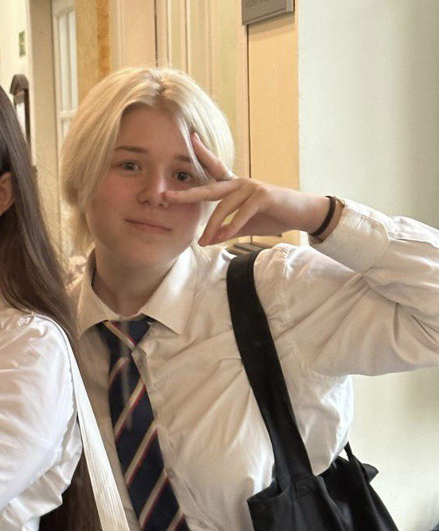

Anastasiya Sanko
Klasa: 8A
Byłam przewodniczącą klasy
Organizowałam różnyja wydarzenia
Prowadziłam koncerty
Poziom B1+ osiągnąłem w 5 miesięcy
Program
- Dodać spodnie do kobiecych mundurków szkolnych
- Dodać ocieplane bluzki, bluzy i swetry, aby zapobiec marznięciu w zimie i zmniejszyć liczbę zachorowań
- Zwrotić dzwonki do i z zajęć. Aby rozgraniczyć czas zajęć i przerw oraz zmniejsz liczbę osób spóźniających się na zajęcia.
Dlaczego chcę być Przewodniczącą Samorządu Szkoły?